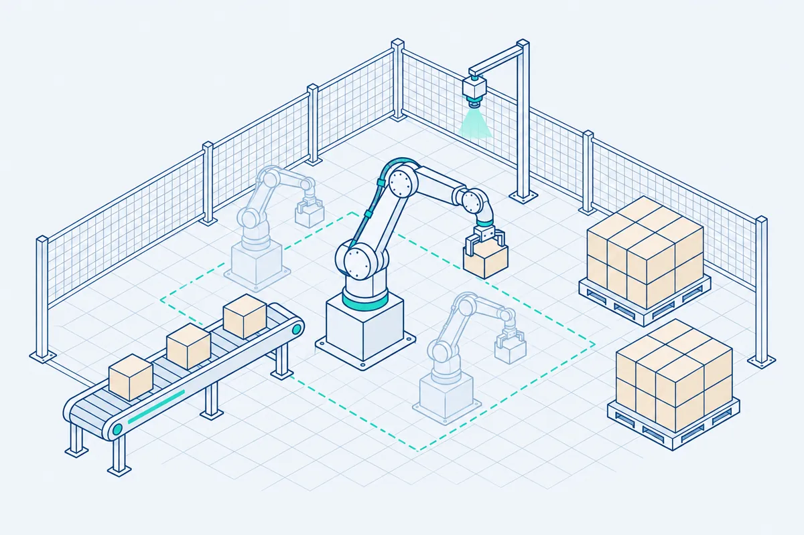
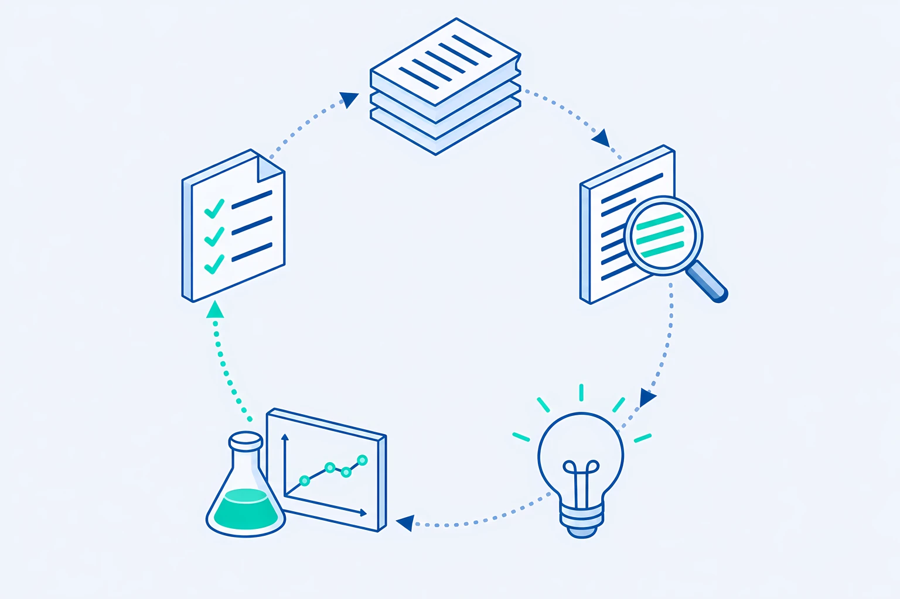
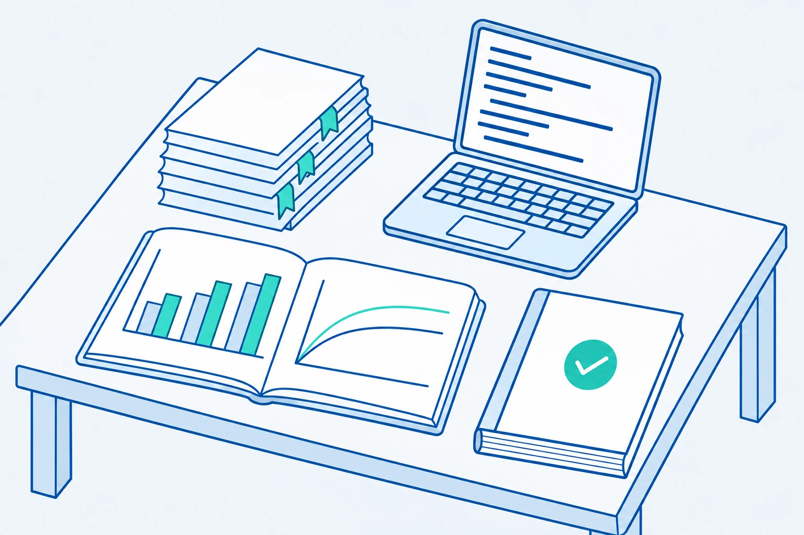
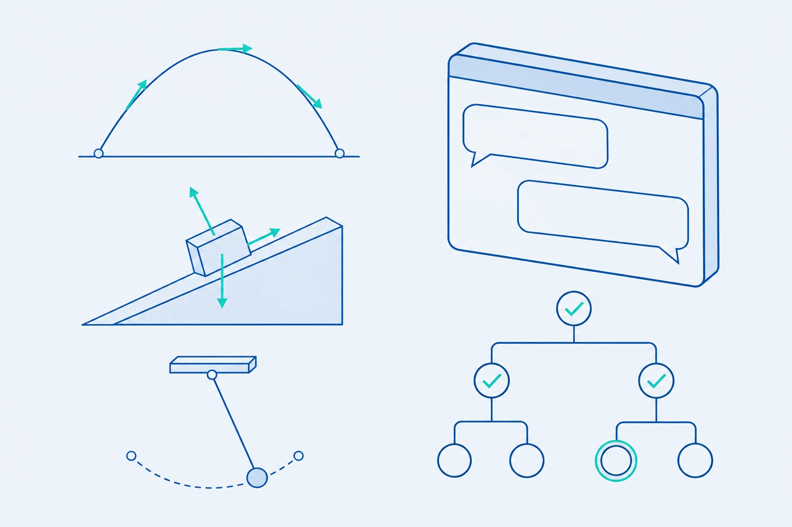
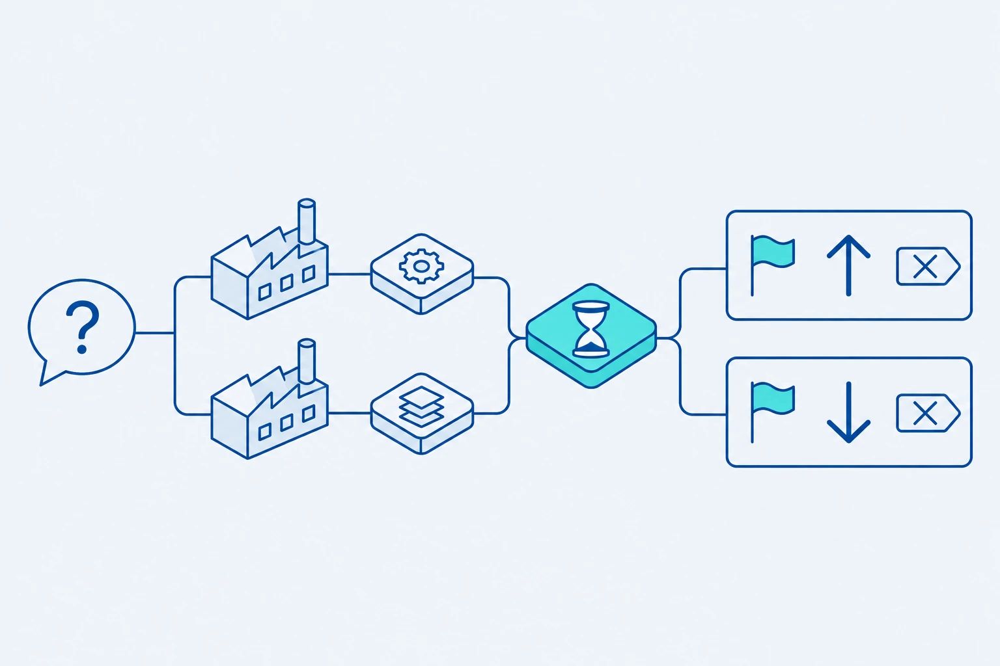

晶片端 AI 與生成式模型最佳化
Edge AI & Generative Model Deployment
針對 NPU、GPU 或嵌入式目標平台，評估人物消除、背景修復、場景合成與辨識模型的裝置端可行性。
可約定交付物
- 目標硬體、Runtime 與模型算子相容性評估
- 依平台支援的模型匯出、轉換、量化與推論原型
- 依測試條件記錄延遲、記憶體與影像品質，附部署限制與交接文件
從晶片、演算法到智慧系統。我們結合 AI 研究、科學計算與軟體工程，為企業打造可上線的 AI 與深科技產品。

拆解人物遮罩、GAN／Diffusion 修補與晶片端驗證。互動展示提供可重現的合成影像對照。
自主研發 · 互動技術展示

把作業需求、廠房圖面和機器人限制整理成可審查的 2D／3D 工作站方案。
匿名工程案例 · 軟體已交付

先處理不同文件間的矛盾，再回答技術問題並保留引用與版本依據。
匿名工程案例 · 工程評估

透過雙模干涉單元，觀察相位偏移與振幅衰減如何改變兩個輸出埠。
自主研發 · 互動技術展示
先確認 NPU、GPU、FPGA 或光子架構的算力、算子和量測限制。
依任務選擇生成式模型、深度學習、訊號處理或量子機器學習方法。
把模型接入 Agent、資料流程、運算排程與可維護的軟體系統。
依醫療、金融、工業或企業場域定義測試條件和驗收方式。

為 Diffusion、GAN 與辨識模型規劃裝置端部署。依目標平台評估模型匯出、算子相容性、量化與推論品質。
晶片端部署與評測
工具調用、MCP、多代理分工與交叉查核，把重複且需要專業判斷的知識工作，變成有品質閘門的工作流程。
文獻檢索、證據查核、假說生成與實驗稽核，讓研究流程可追溯、可重現。

從原始腦波與生理訊號，到臨床可用的預測與決策工具，以研究標準驗證每一步。

以頻域、時頻與統計方法做降噪、預測與異常偵測，在高雜訊中萃取微弱訊號。


變分量子電路與混合架構的可行性驗證，一律搭配參數相當的古典對照組，誠實回報差異。

工作站佈局最佳化、CAD 圖面解析、影像辨識與邊緣裝置部署。

知識庫與 RAG、LLM 整合、全端產品、雲端部署與自動化測試，並量測 AI 是否有效、可靠、划算。
針對企業私有運算與研究環境，設計 GPU／CPU 工作佇列、資源分配和監控，並用同一組工作負載比較延遲、吞吐量與資源用量。
GPU 運算與效能工程服務從你要解決的問題出發。每個方案在開始前，都會先一起把範圍與交付物定義清楚。
針對 NPU、GPU 或嵌入式目標平台，評估人物消除、背景修復、場景合成與辨識模型的裝置端可行性。
為企業與研究團隊規劃 GPU 工作負載、資源共享、任務監控及效能量測。可先在目標環境驗證排程與部署流程，再據結果規劃擴展。

把重複且需要專業判斷的知識工作，變成能調用工具、存取資料、有品質控制的 AI 工作流程。

不只幫你做 AI，也量測它是否有效、是否可靠，並找出降低推論成本的空間。

給需要 AI 研發、但還沒有完整研究團隊的新創與中小企業：把一個未知的問題做成有結論的研究。

把散落的文件變成可查詢的知識庫；文件互相矛盾時，先仲裁再回答。

醫療、生理訊號、金融與工業場域的模型與演算法，從資料到可部署的系統。

還不確定該不該做、該怎麼做時，先用少量投入釐清可行性、風險與路線。
全部採專案制報價，依範圍與交付物估算。歡迎直接來信描述需求。
依問題的階段與規模，選擇最合適的合作方式。
針對特定技術難題提供方向評估、方法選型與決策建議，以少量投入快速釐清可行性與風險。
在投入完整開發前，先以可重現的實驗驗證關鍵技術與假設，用最小成本確認「這條路走得通」。
打造最小可行產品，用最短路徑把核心價值做成能實際使用、可拿去驗證市場的雛形。
完整承接專案，從問題定義、方法設計到系統交付一手包辦，產出穩健、可維護、可上線的成果。
以持續合作的方式深入你的團隊與場域，提供穩定的技術支援、迭代與共同研發；也可擔任兼任技術長，協助技術決策與團隊建置。
依產業、技術或專案狀態找案例。各頁標明成果的歸屬、證據和適用範圍。
產業可複選。搜尋與篩選結果可從網址分享。
沒有符合目前搜尋與篩選的項目。
Industrial Robot Workcell Design Platform
規劃碼垛工作站時，工程師要同時考量廠房尺寸、機器人可達性、節拍與設備成本。
工作站設計可從需求走到 CAD、物料清單與候選佈局，供工程審查。

EEG Research on Depression Treatment Response
非侵入性腦刺激的治療反應因人而異，臨床團隊希望在治療前取得可供判讀的資訊。
已發表跨資料集比較及驗證，研究模型亦有門診使用經驗。


AI Investment Research Platform
投資研究需要跨文件整理事實、公司關係與時間先後。摘要若和來源脫節，後續很難查證。
研究工作區支援回看版本與引用，並連結至公司關係的原始文本。


Edge Fall Monitoring for Long-Term Care
長照場域需要及時辨識可能的跌倒，並讓照護人員能夠確認事件。
完成邊緣裝置上的感測、辨識與告警整合。

Adaptive Introductory Physics Tutor
大班普通物理課程中，學生的進度與卡關原因各不相同。
完成普通物理家教應用，提供學生使用。
On-device Generative Vision: Person Removal and Scene Synthesis
人物消除需要補回被遮住的背景。部署到裝置時，輸出品質、模型所需記憶體和運算成本都要評估。
展示可調整遮罩、比較遮擋輸入與還原結果，並計算遮罩內像素誤差。
Photonic Computing and Fault Simulation
光子運算架構對相位誤差與插入損耗敏感，設計初期需要釐清元件變動對輸出的影響。
相位與衰減控制會更新兩個輸出埠功率及合計，供檢查模型行為。
GPU Compute Orchestration
共享運算環境若同時有多個工作，必須兼顧資源需求、等待順序與資源利用。
展示可比較等待中的工作、已模擬排入的時段、無法排入的工作及模擬資源使用。

我們最擅長的，是從零研究一個還沒有標準答案的問題：先定義清楚、設好基準與對照組，設計方法並以實驗驗證，再把它工程化成真正能用的產品。

把模糊的需求收斂成可量測、可驗證的問題。
從文獻與基準出發，設計合適的量化方法與評估指標。
以基準、對照組與消融實驗驗證，確保結果可重現、可解釋。
將方法工程化為穩健、可維護、可部署的系統。
創辦人與研究團隊的公開研究，涵蓋生成式模型、量子運算、腦波與時序訊號。各列標明期刊、會議或預印本來源。
完整論文列表見 Google Scholar ↗
我們自己開發、自己使用的工具。每一項都標明目前狀態：已開源的可以直接看程式碼，其餘仍在內部使用或開發中。
操作合成影像修補、光路故障與 GPU 排程，並查看各模型的輸入、輸出和限制。
可複選，只顯示符合所有所選主題與狀態的工具。
沒有符合所選主題與狀態的工具。
從文獻抽出可驗證的證據；LLM 對來源的每個宣稱，都必須有原文與數字上下文支持才放行。

在本機可重現地量測 LLM 應用的模型呼叫、token 用量與答對率，比較不同策略的成本與品質。

七類不需第二個模型的驗證，專抓「看起來合理但其實錯了」的輸出：改寫過的引文、捏造的引用、被截斷的統計。

文獻監控、構想辯論、預註冊閘門、實驗、撰稿、審稿模擬到數字稽核，關鍵節點保留人工把關。

從一個問題展開多層供應鏈關係、排序瓶頸，產生附觸發與失效條件的假說，並逐句回查引用。

十一套確定性計算引擎負責運算，LLM 只負責解讀：示範如何把複雜的領域規則做成可信的 AI 產品。
具電子物理與生醫資訊訓練，曾任數位 IC 設計工程師及 AI 新創共同創辦人與 CTO。研究涵蓋腦波訊號處理、臨床決策支援與量子機器學習。學術與專業經歷
急救研究分為高雜訊語音處理，以及以結構化創傷資料進行預測建模。腦波療效預測源自碩士研究，後續由醫療團隊應用於門診。
串接專業夥伴，補齊數位與硬體整合需求——從量測儀器與驗證、AOI 影像檢測、AIoT、工業電子維修，到企業 AI 導入與數位轉型，把研究級方法延伸為完整的軟硬體交付。


先說明問題、希望交付的成果，以及現有的資料或硬體。第一次對話會一起定義可行性驗證和驗收方式。